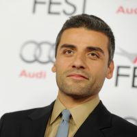
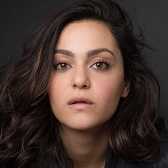
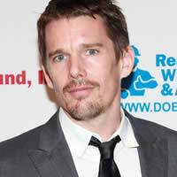
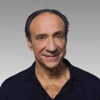

O Cavaleiro da Lua teve sua primeira aparição em Werewolf by Night #32, em Agosto de 1975. Criado por Doug Moench e artista Don Perlin, a personagem foi originalmente criado para ser um antagonista, porém, muitos fãs começaram a gostar do Anti-Herói, o que gerou sua própria história em quadrinhos, começada em 1980, ainda escrito por Doug Moench mas agora desenhado por Bill Sienkiewicz, com uma história de origem completa.
A série começou sua produção em 2021, indo ao ar em 2022, na Disney Plus, contando com 6 episódios com cerca de 50 minutos cada.
Steven Grant/Marc Spector: O protagonsita, Cavaleiro da Lua, interpretado por Oscar Isaac Hernández Estrada (Cidade da Guatemala, 9 de março de 1979). é um ator e músico guatemalteco-americano. Oscar é mais conhecido por ter protagonizado o filme Inside Llewyn Davis e por papéis como o de Poe Dameron na saga Star Wars, Nathan em Ex-Machina e o Duque Leto Atreides em Dune. Desde 2022, interpreta o papel de Marc Spector / Moon Knight no Universo Cinematográfico da Marvel. Em 2016, Oscar venceu o Globo de Ouro de Melhor Ator em Minissérie ou Telefilme pela minissérie Show Me a Hero. No mesmo ano foi considerado uma das 100 pessoas mais influentes do mundo pela revista Time.

Layla El-Faouly: A ex-esposa de Marc Spector, Interpretada por May Calamawy, (Barém, 28 de outubro de 1986) é uma atriz Egípcia-Palestina nascida no Barém, que mora e trabalha nos Estados Unidos desde 2015. Ela é conhecida por seus papéis em séries de TV Americanas como Dena Hassan em Ramy, e Layla El-Faouly em Cavaleiro da Lua.

Arthur Harrow: O principal antagonista, o líder do Culto a Ammit, interpretado por Ethan Hawk, (Austin, 6 de novembro de 1970) é um ator, escritor e cineasta norte-americano. Já foi indicado quatro vezes ao Oscar, duas na categoria de Melhor Ator Coadjuvante, por Training Day e Boyhood, e duas na categoria de Melhor Roteiro Adaptado pelos filmes Before Sunset e Before Midnight, que lhe renderam fama e aclamação da crítica.

Khonshu: Com voz de F. Murray Abraham, e com performace física de Karim El Hakim de Paranormal, o Deus egípcio da Lua e da Vingança é feito quase inteiramente com computação gráfica. Murray (Pittsburgh, 24 de outubro de 1939) é um ator americano, obteve o Oscar de melhor ator pelo papel desempenhado no filme Amadeus. Desde então, ele participou de muitos outros filmes, programas de televisão e, principalmente, de peças de teatro.

Formada por: Hesham Nazih, (compositor) Donald Mowat (maquiador), e Tim Nolan (cabeleiro). Quatro dos seis episódios da série são dirigidos pelo diretor egípcio Mohamed Diab, primeiro diretor árabe a liderar um projeto da Marvel. Já os dois seguintes estão a cargo da dupla de cineastas americanos Justin Benson e Aaron Moorhead, especialistas em elementos narrativos enigmáticos de terror e mistério, Gregory Middleton e Andrew Droz Palermo são os diretores de fotografia. As cenas de ação, por sua vez, tiveram a supervisão e o olhar especializado de Olivier Schneider.
Michael Kastelein, Beau DeMayo, Peter Cameron, Sabir Pirzada, Alex Meenehan, Rebecca Kirsch, Matthew Orton e Danielle Iman são os roteiristas da série, com um arqueólogo especializado em tumbas egípcias sendo consultado pelos roteiristas. Feige comparou a série à franquia Indiana Jones, enquanto explora a egiptologia, dois aspectos que foram uma grande parte da proposta de Slater, já que ele queria contar uma "história sombria e complexa" misturada com "magia grande, divertida, sobrenatural e no estilo Amblin". Stefania Cella é a desenhista de produção, trabalhando com egiptólogos e um diretor de arte supervisor egípcio para garantir a precisão histórica em seus cenários, Meghan Kasperlik (figurinista). Diab queria que os trajes tivessem muitos símbolos e iconografia egípcios, com Kasperlik encontrando maneiras de incluir "essas sutilezas, mas ainda representando a cultura egípcia hoje e também os símbolos egípcios do passado". Ela também trabalhou com Cella para garantir que os mesmos símbolos dos cenários fossem incorporados aos figurinos
As filmagens estavam previstas para começar em março de 2021, e começaram no final de abril na Hungria. A série foi filmada com o título provisório de "Good Faith", com Diab dirigindo o primeiro, o terceiro e os dois episódios finais e Benson e Moorhead dirigindo o segundo e o quarto. Moorhead explicou que ele e Benson foram "entregues" ao segundo e quarto episódios para dirigir, em parte por razões logísticas, mas também porque cada um dos episódios foi projetado para ter "sua própria voz", embora os dois primeiros episódios conectem um pouco mais próximos uns dos outros porque os criativos ainda estavam "descobrindo a produção" na época. Ele continuou dizendo que a localização do quarto episódio era "muito própria", permitindo que a dupla "isolasse um pouco", enquanto os dois episódios finais são "sua própria voz um do outro e do resto dos episódios". Gregory Middleton foi o diretor de fotografia de Diab, e Andrew Droz Palermo foi o de Benson e Moorhead. O trabalho de Soundstage ocorreu no Origo Studios em Budapeste
Voltar ao topo